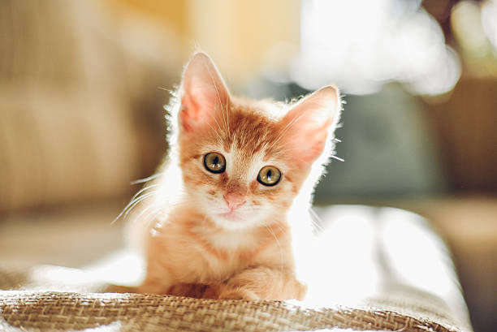
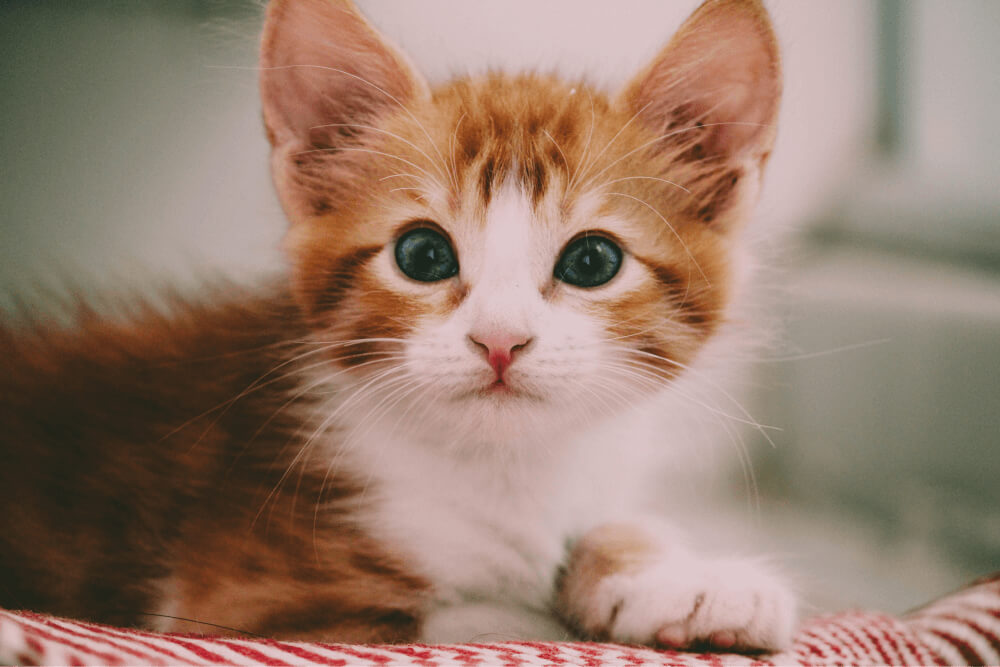
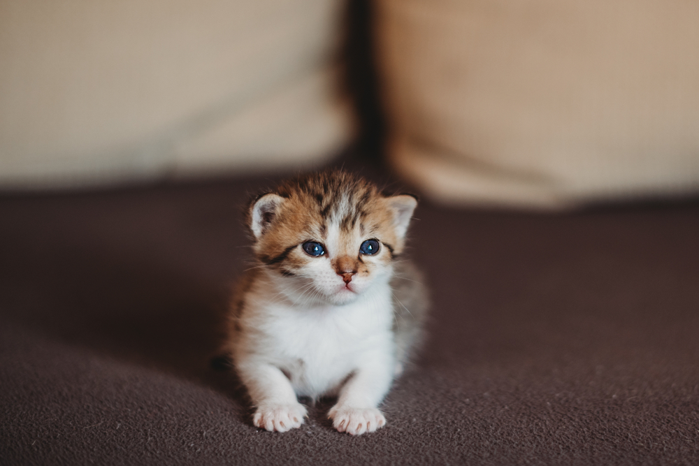
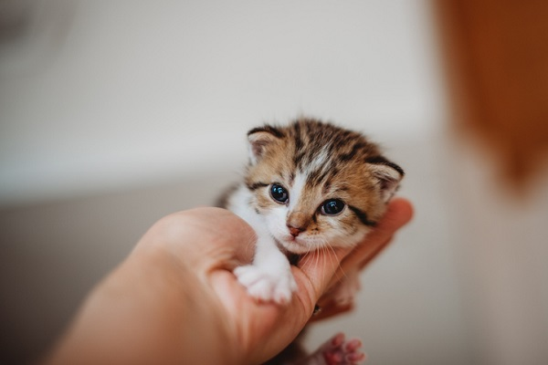

Clove
Um companheiro curioso, inteligente e cheio de personalidade, que encanta com seu jeitinho explorador.
Localização: Poços de Caldas - MG
Tenho interesse em adotarA adoção responsável começa com conhecimento e carinho.
A história de Clove
Um coraçãozinho cheio de amor, que encanta com seu olhar doce e seu jeitinho delicado de pedir carinho.
Adora momentos tranquilos, lugares aconchegantes e demonstrações de afeto. Tem uma maneira muito especial de criar vínculos e tornar a rotina mais leve. Uma companheira que pode transformar uma casa em um verdadeiro lar.
Personalidade e cuidados
Personalidade
- Carinhosa e tranquila
- Curiosa e brincalhona
- Gosta de ambientes confortáveis
- Adapta-se gradualmente a novidades
Cuidados necessários
- Alimentação adequada para gatos
- Água fresca sempre disponível
- Caixa de areia limpa
- Ambiente seguro e enriquecido
Saúde e vacinação
- Vacinação: Vacinas em dia
- Vermifugação: Em dia
- Castração: Castrada
- Acompanhamento veterinário recomendado
Que tal dar um novo lar para a Clove ?
Ela está esperando por uma família que possa oferecer carinho, cuidado e uma vida cheia de bons momentos.
Quero conhecer o processo de adoção